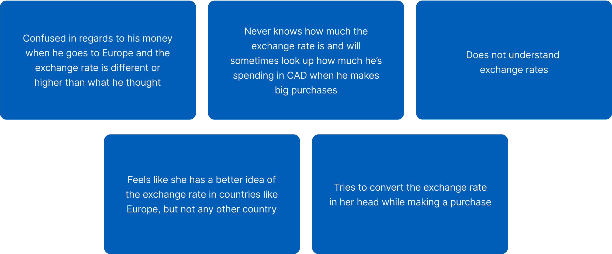

A feature that allows users to easily calculate their purchases in the local currency & view foreign transaction rates while traveling abroad.
(Student project)
UX Design
Branding
UI Design
Testing
1 month
*Working on a part-time
20hr/week schedule
When traveling abroad, managing expenses can be challenging, with fluctuating exchange rates and hidden foreign transaction fees complicating the process. This UX project aims to simplify the experience by developing a feature that allows users to effortlessly calculate their purchases in the local currency and view foreign transaction rates in real time.
Travelers often lack awareness of currency conversions and foreign transaction fees, leading to overspending and going beyond their budget.
With these challenges in mind, I scheduled time to speak with users about their experiences managing finances while traveling abroad. To gain deeper insights, I employed the following two research methods:
I interviewed five recent travelers who shared their experiences with making both large and small purchases abroad. Their insights provided valuable perspectives on the challenges they faced with managing expenses while traveling.
This project demanded a thorough understanding of foreign transaction fees and up-to-date currency exchange information. Additionally, it required exploring the feasibility of incorporating such features within banking apps.
5 Participants / 2 Men, 3 Women / Ages 24-30
One of the most consistent findings from my research was that all participants felt poorly informed about exchange rates and the foreign transaction fees they were being charged.
Important findings from my affinity map
I created two personas to embody the individuals I interviewed. Christine represents those who carefully monitor their finances but are constantly seeking to expand their knowledge. Ivan, on the other hand, takes a more relaxed approach to managing his money, hoping to learn along the way and save where possible. Regardless of their level of financial understanding, both personas struggle to grasp exchange rates and foreign transaction fees effectively.
By crafting personas and analyzing my research data, my goal was to tackle the issues posed by this question:
The initial step was to determine the most suitable location for this feature. While the "Benefits & Travel" page in the bottom menu seemed like a natural fit, it primarily focuses on points and booking options. Therefore, the next best choice was the "More" page, where other travel-related features are already housed.
To address the “How Might We” question above, I mapped out user flows for completing tasks such as "calculating a purchase" and "viewing foreign transaction fees." Given that these tasks are straightforward and don’t require multiple pages, I opted to consolidate both features on a single screen, enhancing the user experience with a streamlined and unified interface.
I focused on keeping my designs consistent with Chase's established branding. I matched their signature blues and grays, using the same long rectangular buttons for primary actions, with small outlined rounded buttons as secondary options. I stuck with Chase’s typeface and kept the “Currency & Fees” button in line with the simple blue, outlined style found on the “More” page. To keep the screens feeling cohesive, I drew on common layouts seen in the app, designing the currency converter and foreign transaction fees pages to follow the same format as other transaction-related screens. This way, everything felt like a natural extension of Chase's design style.
Thanks to Chase's established branding, I could move directly to creating high-fidelity wireframes. I took screenshots of the existing screens and seamlessly integrated the new feature into the design.
Users can access the feature by navigating to the "Currency & Fees" button in the "Travel & Dining" section on the "More" page. Here, they can convert currencies, check exchange rate history, and view foreign transaction fees and their history associated with their cards. Since not all Chase cards incur foreign transaction fees, I also included a screen view for cards with no fees to ensure clarity for all users.
As a new feature for Chase, it's crucial to consider how it will be introduced to users. The most effective approach would be to notify them directly through an app notification and provide alerts when they begin making purchases abroad. Additionally, users would be prompted to enable location services, allowing the app to automatically set their currency and foreign transaction fee to the one that corresponds with their current location.
To evaluate the usability and ease of this new feature, I asked users to complete two tasks: converting a currency to their home currency and checking the amount charged in foreign transaction fees.
While both tasks were straightforward for all users, there was common confusion about the meaning of some of the numbers displayed. Below are their reactions and questions regarding the presentation of the foreign transaction fee amounts per charge.
Once the feedback from the user testing was received, I went back to the wireframes and added their suggestions.
Since there was confusion on what the small blue numbers meant underneath each transaction made abroad. I had to re-think the way these foreign transaction fee amounts were displayed. To maintain consistency with other screens, I decided to label any deductions from the bank account in red. Additionally, I realized it was clearer to display only the foreign transaction fee amount to avoid any confusion that the fee was being subtracted from the original purchase amount.

As I continue to develop and refine this project, I’m excited to explore a few key additions: an AR currency converter for on-the-go conversions using your camera, voice-activated conversion for hands-free use, and location-based suggestions on local spending norms and cost-saving tips.